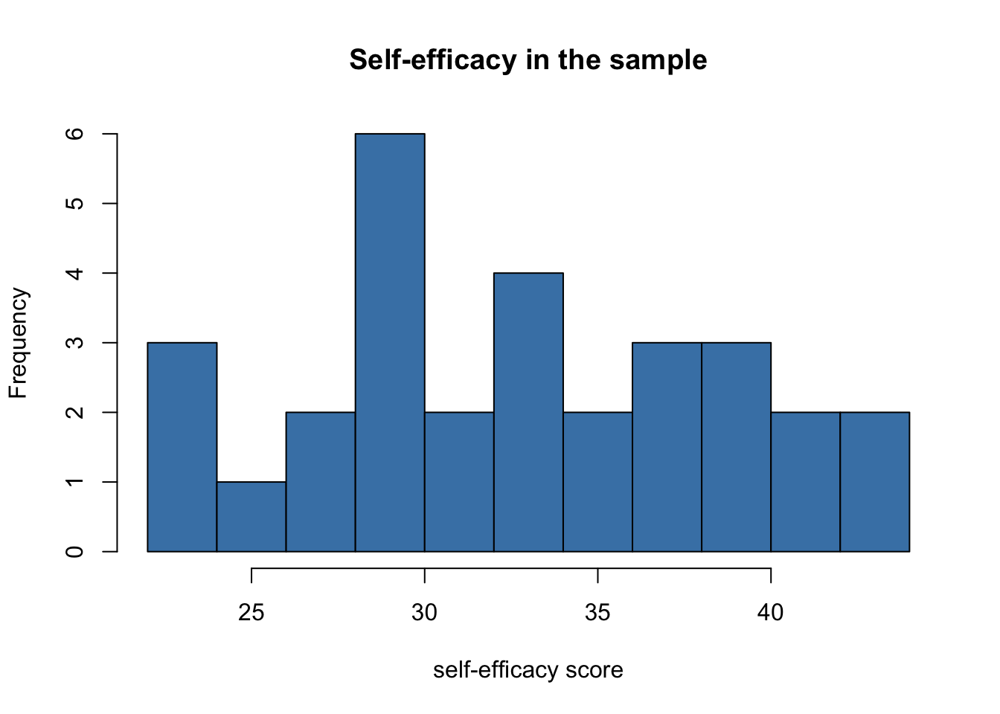
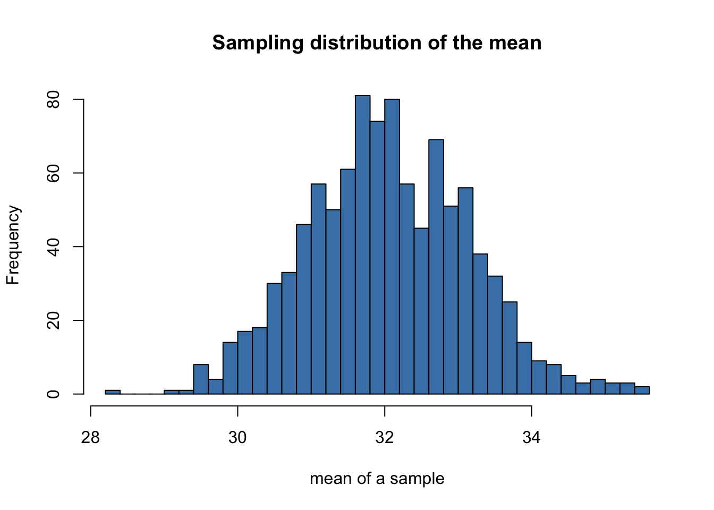
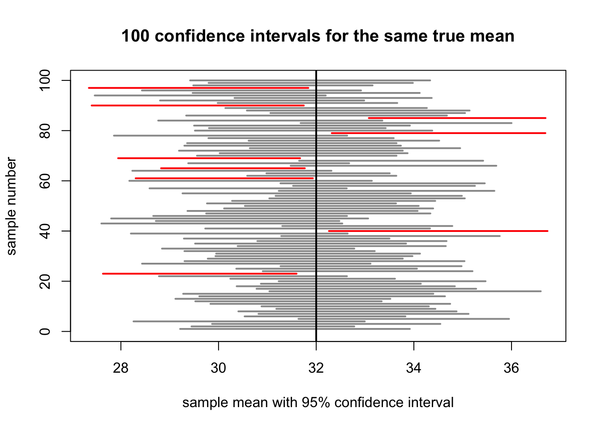

survey <- read.csv("class_survey_clean.csv")r_tutorial_week_03
Werkcollege 3
How to use this tutorial
Welcome back! In Week 2 you learned to describe one sample: you loaded the class data, cleaned it, and summarised it with the mean, the standard deviation, histograms, and boxplots.
This week we take the next step. We have measured a sample, but we usually want to say something about a much larger population. For example, our class is a small sample, but we may want to say something about all first-year students. This week is about that step: from sample to population.
Work through this page carefully, from top to bottom. Every short explanation is followed by a Your turn task to do yourself.
General tips:
- Read each part slowly and in order. Each step builds on the one before it.
- Type the code yourself instead of copying and pasting it. You learn faster this way.
- Errors are normal. Read the message and try again.
- If you are stuck, ask a teacher or check the FAQ.
- Save your work often.
1 Start workflow
We begin, as always, with the start workflow. This week there is one extra step: we load the cleaned data you saved at the end of Week 2.
- Open RStudio: click on the RStudio application.
- Set the working directory: click Session > Set Working Directory > Choose Directory, and choose your
research_methodsfolder. - Open a new script: click File > New File > R Script.
- On the first line, write a comment with the title, for example:
# R tutorial - Week 3. - Save the script as
week3.Rin yourresearch_methodsfolder. - Load your cleaned data from Week 2 into an object called
survey:
WarningWatch out
If you see Error: cannot open file ..., R cannot find the file. Check that your working directory is research_methods (run getwd() to print it), and that class_survey_clean.csv really sits in that folder. If you do not have the file, go back to the end of the Week 2 tutorial and save it first.
Your turn
Complete the start workflow and load survey. Check that survey appears in the Environment pane (top-right).
2 From sample to population
A population is the whole group you want to say something about, for example all first-year Orthopedagogy students. A sample is the smaller group you actually measured, for example the students in our class. We almost never measure a whole population, because it is too big. So we measure a sample and use it to make an estimate about the population.
When we compute the average of a sample, that number is a point estimate of the population average. A point estimate is our single best guess for the population value, based on the sample.
mean(survey$self_efficacy) # point estimate of the population's average self-efficacy
#> [1] 33.23333This one number is our best guess for the average self-efficacy of the whole population, based only on the information we collected in our class.
NoteExample: what is the population?
Imagine you measured the average number of study hours in our class and found 14 hours per week.
- Your sample is our class.
- Your point estimate is 14 hours.
- Your population might be “all first-year students at this university”, or “all Dutch first-year students”, or something else.
The point estimate is always the same number (14), but what it says something about depends on which population you have in mind.
Choosing your population is not a technical step; it is a thinking step. It depends on who you measured and thus, if your sample generalises to the population.
Your turn
Think about your own research question (the one you will work with for the rest of the course).
- Write down, in one sentence, what your population is.
- Write down what your sample is.
- Explain in one or two sentences why your sample may, or may not, be a good representation for that population.
3 Sampling fluctuation
Here is a key idea. If you took a different sample from the same population, you would get a slightly different point estimate. This is called sampling fluctuation: the sample mean jumps around a little from sample to sample, just by chance.
We can see this with our own data by taking subsamples. A subsample is a smaller, random part of your dataset. If our class is the sample, a subsample is a random handful of those students.
To take one, we need two new functions:
sample()picks random numbers. We use it to pick random row numbers.set.seed()fixes the random choice, so it is the same every time you run it. This keeps your work reproducible: you and a classmate get the exact same “random” rows.
We then keep those rows with square brackets, survey[rows, ], using the row indexing you learned in Week 2 (the empty part after the comma means “keep all columns”).
NoteExample: why
set.seed() matters
Run these two lines, then run them again:
set.seed(1)
sample(1:30, 5) # five random numbers between 1 and 30With set.seed(1) in front, you get the same five numbers every time. Without it, you would get different numbers on each run, and your results would not be reproducible.
set.seed(1)
rows_a <- sample(1:nrow(survey), 15) # pick 15 random row numbers (1 to 30 people)
sample_a <- survey[rows_a, ] # keep those rows
mean(sample_a$self_efficacy) # the mean of subsample A
#> [1] 33.93333Now we take a second subsample, with a different seed:
set.seed(2)
rows_b <- sample(1:nrow(survey), 15)
sample_b <- survey[rows_b, ]
mean(sample_b$self_efficacy) # the mean of subsample B
#> [1] 33The two subsample means are not the same, and neither is exactly equal to the mean of the whole dataset:
mean(survey$self_efficacy) # the full-data mean
#> [1] 33.23333None of these numbers is “wrong”. They simply show that a sample mean is an estimate that wobbles a bit. This wobble is exactly why we need the next tool: a way to say how confident we are about our estimate.
Your turn
Repeat the steps above for the study_hours variable. Draw two subsamples of 15 people (use set.seed(1) and set.seed(2)), and compare their two means with the full-data mean. Are the three numbers close together or far apart?
4 Confidence intervals by hand
A point estimate is a single number, but we just saw that it wobbles. So a single number alone does not tell the whole story. A confidence interval (in Dutch: betrouwbaarheidsinterval, or BHI) is a range around the point estimate. It says: “the true population value is plausibly somewhere in here.”
We will build a 95% confidence interval step by step, using R as a calculator. We need four ingredients.
1. The point estimate (the sample mean):
m <- mean(survey$self_efficacy)
m
#> [1] 33.233332. The standard error. The standard error tells us how much the sample mean is expected to wobble. It is the standard deviation divided by the square root of the number of people. This uses the function sqrt() (square root):
s <- sd(survey$self_efficacy) # standard deviation
n <- nrow(survey) # number of people
se <- s / sqrt(n) # standard error
se
#> [1] 1.103478
NoteA smaller standard error means a more precise estimate
Look at the formula s / sqrt(n): a bigger sample (larger n) makes the standard error smaller. More people means less wobble, and a more precise estimate. This is one reason larger samples are better.
3. The z-value. For a 95% confidence interval, we multiply the standard error by a fixed number: 1.96. This number comes from statistical theory; for now, just remember that 95% goes with 1.96.
z <- 1.964. The interval. The lower and upper edges are the point estimate, minus and plus z * se:
lower <- m - z * se
upper <- m + z * se
c(lower, upper) # the 95% confidence interval
#> [1] 31.07052 35.39615You now have a 95% confidence interval for the average self-efficacy. We read it like this: “Our best guess for the population average is m, and we are 95% confident the true average lies between lower and upper.”
WarningWatch out: a common misreading
A 95% confidence interval does not mean “95% of people fall in this range”. It is about the average, not about individual people. It expresses how sure we are about where the population mean lies.
Your turn
Compute a 95% confidence interval by hand for the study_hours variable, following the same four steps: the mean, the standard error (sd / sqrt(n)), the z-value 1.96, and the lower and upper edges. Write down the interval.
5 A confidence interval for your own variable
From now on you work with the variable(s) you chose for your research question. This is the variable whose average you want to estimate: your dependent variable. We do three things: look at it, estimate it, and interpret it.
Step 1: visualise the distribution. Always look at the variable first, with a histogram (from Week 2):
hist(survey$self_efficacy,
breaks = 10,
col = "steelblue",
main = "Self-efficacy in the sample",
xlab = "self-efficacy score")
Step 2: the point estimate and the confidence interval. These are the same steps as the section above, gathered in one place:
m <- mean(survey$self_efficacy)
s <- sd(survey$self_efficacy)
n <- nrow(survey)
se <- s / sqrt(n)
point_estimate <- m
ci_lower <- m - 1.96 * se
ci_upper <- m + 1.96 * se
point_estimate
#> [1] 33.23333
c(ci_lower, ci_upper)
#> [1] 31.07052 35.39615Step 3: interpret. Two questions matter here.
- What does the point estimate say? It describes your group. For example, a mean self-efficacy of 33.2 on this scale tells you how self-efficacious the students in the sample are, on average (high, medium, or low, depending on the scale).
- What does the confidence interval add? It tells you how precise that estimate is. A narrow interval means a precise estimate; a wide interval means there is more uncertainty about the population average.
TipGoing further (optional): the t-distribution and t.test()
The value 1.96 comes from the normal distribution (also called the z-distribution). It assumes we know the spread in the population very well. In real research we only estimate the spread from our sample, so for small samples the correct multiplier is a little larger than 1.96. That larger multiplier comes from the t-distribution.
You do not need to compute this by hand. R has a function, t.test(), that builds the interval for you using the t-distribution:
t.test(survey$self_efficacy)$conf.int
#> [1] 30.97647 35.49020
#> attr(,"conf.level")
#> [1] 0.95Compare this with your by-hand interval: it is very similar, but usually a little wider, because the t-distribution is more cautious with small samples. As the sample gets bigger, the t-value gets closer and closer to 1.96, and the two intervals become almost identical.
Your turn
For your own dependent variable:
- Make a histogram with a clear title and x-axis label.
- Compute the point estimate and the 95% confidence interval.
- Write two sentences: one about what the point estimate says about your group, and one about what the confidence interval adds.
6 Does the interval catch the true mean?
This is a good moment to test the idea. Let us pretend, for a second, that the mean of the whole dataset is the “true” population value. Then we take a subsample, build its confidence interval, and check: does the full-data mean fall inside that interval?
true_mean <- mean(survey$self_efficacy) # we treat this as the "truth"
set.seed(1)
rows <- sample(1:nrow(survey), 15)
sub <- survey[rows, ]
m <- mean(sub$self_efficacy)
s <- sd(sub$self_efficacy)
n <- nrow(sub)
se <- s / sqrt(n)
low <- m - 1.96 * se
high <- m + 1.96 * se
c(low, high)
#> [1] 30.92435 36.94232
# is the true mean inside this interval? (TRUE or FALSE)
low <= true_mean & true_mean <= high
#> [1] TRUEThe last line asks: “is true_mean greater than or equal to the lower edge and smaller than or equal to the upper edge?” It gives back TRUE if the interval catches the true mean, and FALSE if it misses.
If you change the seed and run it again, you will sometimes get TRUE and sometimes FALSE. A confidence interval does not catch the truth every single time; a 95% interval is built to catch it about 95% of the time in the long run.
Your turn
Run the check above three times, each time with a different seed (for example set.seed(3), set.seed(4), set.seed(5)). For each run, note whether the interval caught the full-data mean (TRUE or FALSE). How many of your three intervals caught it?
7 Simulating many samples
With real data we only ever see one sample, so we cannot really check “how often does the interval catch the truth?”. With simulated data we can, because we decide the true population value ourselves. This section uses code you can run and read; you do not need to write it yourself.
We will pretend the population has a known average of 32 and a known spread (standard deviation) of 6.
Step 1: one simulated sample. The function rnorm(n, mean, sd) draws n random values from a normal population with a given mean and standard deviation:
pop_mean <- 32 # the TRUE population mean (we decide it)
pop_sd <- 6 # the TRUE population spread
n <- 30 # people per sample
set.seed(2026)
one_sample <- rnorm(n, mean = pop_mean, sd = pop_sd)
mean(one_sample) # the mean of this one sample: close to 32, but not exactly
#> [1] 31.56543Step 2: the sampling distribution. Now imagine drawing not one sample, but 1000 samples, and writing down the mean of each. The function replicate() repeats an action many times. The collection of all those sample means is called the sampling distribution.
set.seed(2026)
sample_means <- replicate(1000, mean(rnorm(n, mean = pop_mean, sd = pop_sd)))
hist(sample_means,
breaks = 30,
col = "steelblue",
main = "Sampling distribution of the mean",
xlab = "mean of a sample")
Notice that the sample means cluster tightly around the true value of 32. Most samples give a mean near 32, and only a few land far away. This is sampling fluctuation, seen 1000 times at once.
Step 3: a confidence interval for many samples. For each of 100 samples, we build a 95% confidence interval, and then check how often the interval catches the true population mean (32).
n_sim <- 100
set.seed(2026)
# For each sample, compute its lower and upper CI edge.
sims <- replicate(n_sim, {
x <- rnorm(n, mean = pop_mean, sd = pop_sd)
m <- mean(x)
se <- sd(x) / sqrt(n)
c(lower = m - 1.96 * se, upper = m + 1.96 * se)
})
lowers <- sims["lower", ]
uppers <- sims["upper", ]
# Does each interval contain the true mean?
contains <- lowers <= pop_mean & pop_mean <= uppers
mean(contains) # the share of intervals that caught the truth
#> [1] 0.91That last number is the coverage: the share of intervals that caught the true mean. It should be close to 0.95 (95%). This is what “95% confidence” really means.
Step 4: a picture. Finally, we draw each interval as a horizontal line, stacked on top of each other. The vertical black line is the true population mean. Intervals that miss the true mean are drawn in red.
plot(NULL,
xlim = range(c(lowers, uppers)),
ylim = c(0, n_sim),
xlab = "sample mean with 95% confidence interval",
ylab = "sample number",
main = "100 confidence intervals for the same true mean")
# one horizontal line per interval; red if it misses the true mean
segments(x0 = lowers, y0 = 1:n_sim,
x1 = uppers, y1 = 1:n_sim,
col = ifelse(contains, "grey60", "red"),
lwd = 2)
# the true population mean
abline(v = pop_mean, col = "black", lwd = 2)
Look at the plot: most intervals cross the black line (they caught the truth), and a few red ones miss it. About 5 out of 100 are expected to miss. That is the price of 95% confidence: it is right most of the time, but not always.
Your turn
Change the sample size n near the top of Step 1 from 30 to 100, then run Steps 2, 3, and 4 again.
- What happens to the width of the intervals in the plot?
- Does the coverage (the share close to 0.95) change much?
Write one sentence explaining what a larger sample does to your estimate.
8 Recap: what you can now do
Last week you described a single sample. This week you learned to reason from that sample to the population. You can now:
- explain the difference between a sample and a population;
- describe a sample mean as a point estimate of the population mean;
- explain sampling fluctuation by drawing subsamples with
set.seed()andsample(); - compute a 95% confidence interval by hand using the mean, the standard error (
sd / sqrt(n)), and the z-value1.96; - visualise, estimate, and interpret a confidence interval for your own variable;
- check whether an interval catches a known mean with a logical test;
- simulate many samples with
rnorm()andreplicate(), build a sampling distribution, and see that about 95% of the intervals catch the true mean.
A small cheat sheet to keep:
| You want to… | You write… |
|---|---|
| Point estimate (sample mean) | mean(df$x) |
| Standard deviation | sd(df$x) |
| Number of people | nrow(df) |
| Make the random choice repeatable | set.seed(1) |
| Pick random row numbers | sample(1:nrow(df), 15) |
| Standard error | sd(df$x) / sqrt(nrow(df)) |
| Lower edge of 95% CI | m - 1.96 * se |
| Upper edge of 95% CI | m + 1.96 * se |
| CI with the t-distribution | t.test(df$x)$conf.int |
| Is a value inside an interval? | low <= value & value <= high |
| One random sample | rnorm(n, mean = , sd = ) |
| Many sample means | replicate(1000, mean(rnorm(n, mean = , sd = ))) |
| Share that is TRUE | mean(contains) |
Well done. Keep your materials in the research_methods folder, we build directly on them next week.